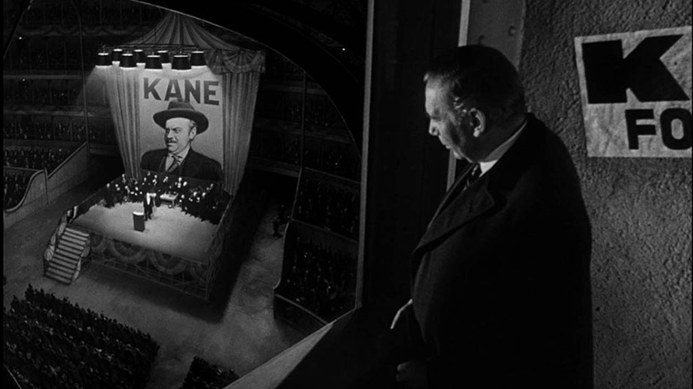
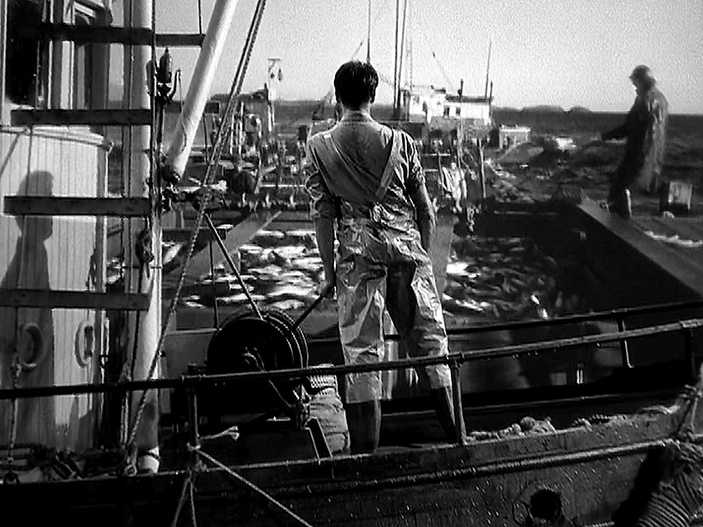

Un effet de filtres pour un film noir et blanc
Dans Docteur Jekyll et M. Hyde de Rouben Mamoulian (1931), une technique de maquillage et de filtres fondée sur le tournage en noir et blanc donne un effet rare et impressionnant. En avalant une potion, le docteur est défiguré en plan continu. Au lieu d'utiliser un plan enchaîné comme l'auraient fait les films de l'époque, un maquillage coloré est appliqué par zones sur le visage de l'acteur, et de façon plus ou moins soutenue. Un filtre de couleur placé devant l'objectif rend invisible en noir et blanc le maquillage. En retirant progressivement le filtre, les zones sombres apparaissent sur son visage et l'effet est bluffant. On retrouve cette technique dans Les Vampires (Riccardo Freda et Mario Bava, 1956) et dans Le Masque du démon (Mario Bava, 1960) ou encore, légèrement adaptée, dans une scène monochrome de Sept ans de réflexion (Billy Wilder, 1955).
La tireuse optique
La tireuse optique apparaît en 1940 et est une variante de la Truca française mise au point par André Debrie en 1924. Elle permet de combiner rapidement deux prises de vue en une seule. Elle facilite les recadrages (agrandissement de portions d'image), les titrages, les effets de transitions (volet, fondu enchaîné, etc.) et devient la machine indispensable aux effets optiques. Orson Welles l'utilise à foison dans Citizen Kane. Les matte paintings figurant le palais de Xanadu et ses pièces immenses, la salle de meeting et la façade du New York Inquirer sont combinés avec des éléments de tournage réels, sans que le spectateur n'ait conscience de ces manipulations.
Le Pictoscope
Abel Gance et Pierre Angénieux brevètent en 1942 le Pitoscope qui permet à l'aide d'une lentille spéciale de relier dans une même image, avec la même netteté, deux espaces physiquement éloignés. L'invention a été utilisée indûment par de nombreux chefs opérateurs, dont Gregg Toland dans Citizen Kane : grâce à elle, il obtient des plans dans lesquels des visages d'acteurs au premier plan et une action à l'arrière-plan apparaissent avec la même netteté.
La transparence (back projection)
Imaginée dès les années 1913 par l'inventeur Yves Le Prieur, et utilisée en France à partir de 1929, la transparence est une alternative au matte painting, consistant à rétroprojeter un décor filmé au préalable sur un écran semi-transparent derrière les acteurs. Ils sont alors intégrés en direct à l'arrière plan. Rapide d'exécution, cette technique est omniprésente dans les année 1940. Elle sert principalement aux scènes de voiture, de train ou d'avion pendant des décennies. La back projection nécessite de faire attention à la fréquence d'obturation de la projection et de la caméra et de les caler ensemble. Il est cependant difficile d'équilibrer la luminosité des acteurs et de la projection qui apparaît souvent plus sombre. Alfred Hitchcock affectionne cette technique, en particulier dans le film Lifeboat de 1944 entièrement filmé par transparence. Le fond de la mer et du ciel étant déjà très lumineux, la technique est très adaptée pour ce film.
Une nouvelle catégorie d'Oscars et le terme "d'effets spéciaux"
En 1939, l'Académie des Oscars décerne un Oscar d'honneur aux créateurs des effets imperceptibles du film Les Gars du large (Spawn of the North), pour « leur contribution exceptionnelle à la création des effets spéciaux photographiques et des effets spéciaux sonores ». Onze techniciens sont nommés, dont les matte painters et les spécialistes en transparences. L'année suivante, les Oscars créent la catégorie des « Special effects » qui fait rentrer dans le langage courant l'appellation « effets spéciaux ». En 1977, il prend l'appellation « Best Visual Effects » (meilleurs effets visuels) encore utilisée aujourd'hui.
Docteur Jekyll et M. Hyde, Rouben Mamoulian, 1931.
Citizen Kane, Orson Welles, 1941 : tireuse optique
Citizen Kane, Orson Welles, 1941 : Pictoscope

Lifeboat, Alfred Hitchcock, 1944.
Spawn of the North, Henry Hathaway, 1938
